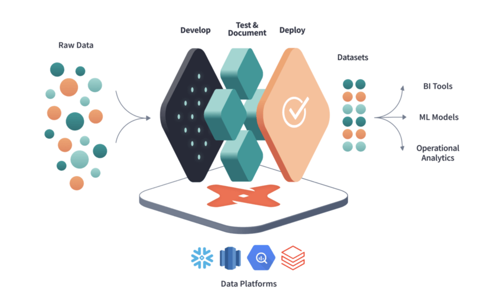
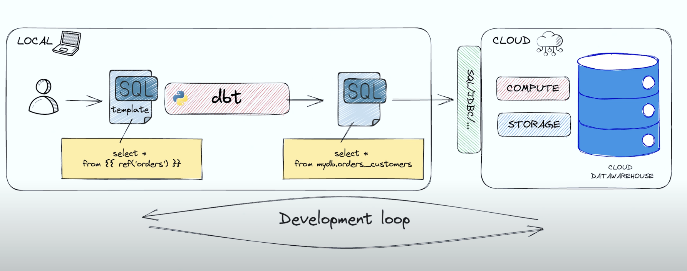
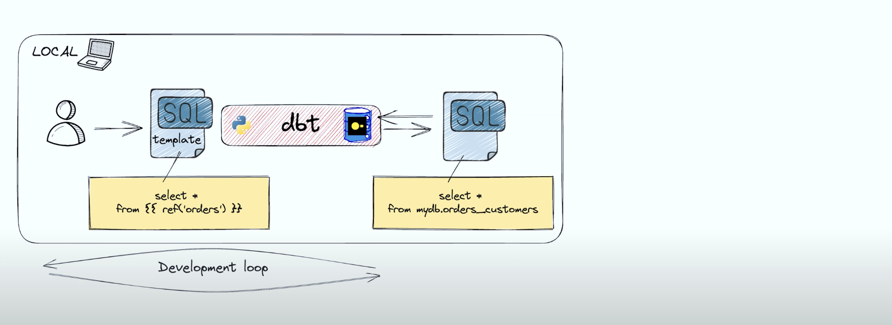

dbt-core: Transformação de Dados para Engenharia de Dados
Introdução
A ferramenta dbt (data build tool) é uma solução inovadora no campo da engenharia de dados, projetada para conectar-se a repositórios de dados centralizados como Data Warehouses e Data Lakes. Ela habilita usuários de negócios, analistas e engenheiros a gerar transformações de dados, regras de negócios e insights valiosos de forma autônoma e eficiente.

O que é dbt?
O dbt é uma ferramenta focada na transformação de dados dentro de um pipeline de ETL/ELT, onde ETL significa Extrair, Transformar e Carregar. Ele se concentra especificamente no aspecto de Transformação (T), permitindo a criação de fluxos de trabalho de transformação de dados usando SQL.
Origem e Evolução
Criado em 2016 para endereçar desafios de unidade e orquestração em SQL, o dbt ganhou tração com a popularização de Data Warehouses em cloud como Redshift, BigQuery, Azure Synapse e Snowflake. Seu desenvolvimento foi impulsionado tanto pela equipe original quanto por uma vibrante comunidade de código aberto.
Princípios Fundamentais do dbt
SQL para Desenvolvimento Rápido
O dbt utiliza SQL, juntamente com a linguagem de templates Jinja, permitindo a reutilização e modularização do código SQL.
Controle de Versão e Trabalho Colaborativo
Com integração Git, o dbt facilita a colaboração e o controle de versões, essencial para pipelines de dados robustos e confiáveis.
Qualidade e Testes
O dbt suporta integração e entrega contínuas, juntamente com testes automatizados, garantindo a integridade e a eficácia das transformações de dados.
Documentação e Linhagem de Dados
A documentação é gerada automaticamente, proporcionando uma visão clara da linhagem dos dados e facilitando a rastreabilidade e a compreensão das transformações.
Como é a configuração padrão do dbt-core

Desvantagens dessa arquitetura padrão
- Não aproveita o seu computador ($$$)
- Você sempre precisa ligar o seu DW para tudo ($$$)
- Dificuldade de realizar testes unitários
- Curva de aprendizado maior
Proposta de arquitetura dbt-core com duckdb

Como o duckdb roda local, conseguimos remover a figura do DW para aproveitar nossa máquina para o ciclo de desenvolvimento e testes.
A conexão com o duckdb é igual a qualquer outro conector
Instalação
poetry add dbt-duckdb
Arquivos Principais
dbt_project.yml: Define as configurações do projeto dbt.profiles.yml: Contém credenciais e perfis para conexões com Data Warehouses.
dbt_project_03:
outputs:
dev:
type: duckdb
path: /tmp/dbt.duckdb
extensions:
- httpfs
- parquet
settings:
s3_region: us-east-1
s3_access_key_id: "{{ env_var('S3_ACCESS_KEY_ID') }}"
s3_secret_access_key: "{{ env_var('S3_SECRET_ACCESS_KEY') }}"
target: dev
```
* `sources.yml`: Define os path das fontes
```yml
version: 2
sources:
- name: external_source
meta:
external_location: 's3://workshop03-salesrecord/vendas/*.parquet'
tables:
- name: transactions